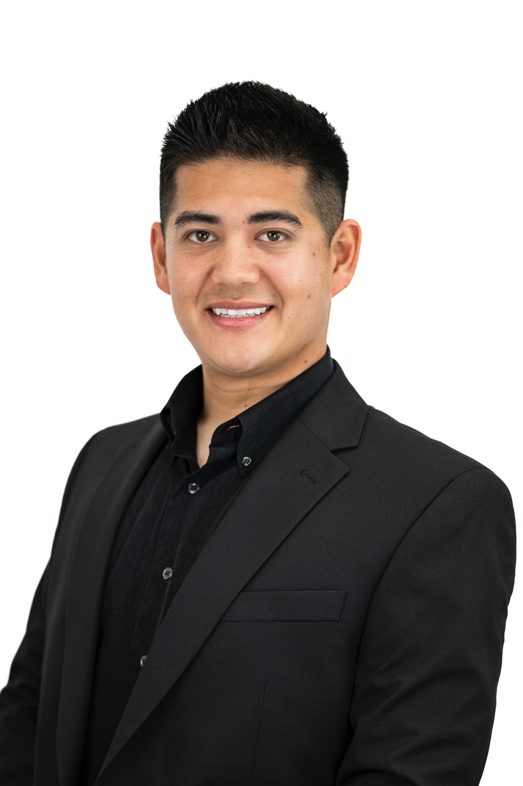

Educate
Keep our schools focused on strong academics, high expectations, and preparing every student with the knowledge and skills they need for what comes next.
CYPRESS SCHOOL BOARD • AREA C
A campaign rooted in strong academics, meaningful partnership with parents, and renewed trust in the Cypress School District.

MEET VERNON
I graduated from Landell Elementary after attending from kindergarten through sixth grade, and I am proud to be a product of the Cypress School District. I walked these campuses, made lifelong friends, and learned from teachers who helped shape who I am today.
My family has called Cypress home for more than 30 years. Today, I work locally as a real estate professional and remain deeply connected to the community that raised me.
That connection is why this campaign is built around three commitments: Educate our students to the highest standard, Empower parents to be true partners in their children's education, and Energize our community with renewed trust and respect for the board.
THE THREE E'S
Every decision I make as a candidate—and, if elected, as a trustee—should come back to these three principles.
Keep our schools focused on strong academics, high expectations, and preparing every student with the knowledge and skills they need for what comes next.
Treat parents as meaningful partners in their children's education and make sure families have clear information, a voice, and a seat at the table.
Rebuild confidence in the district through transparency, respectful leadership, responsible decisions, and stronger connections with our community.
PRIORITIES
The Three E's guide the campaign. These priorities are how I would put them into practice on the board.
Address the district's budget challenges responsibly while prioritizing classroom instruction, student outcomes, and the resources students rely on.
Make decisions openly, explain them clearly, and communicate consistently with families, teachers, staff, and the community.
Value strong school leadership and thoughtful decision-making because consistency helps students and staff succeed.
Keep the board focused on reading, math, critical thinking, and preparing every student for what comes next.
WHY I'M RUNNING
Our district faces real challenges that require a fresh perspective. We need to address a $3.5 million budget deficit without losing sight of the teachers and classroom programs that matter most to students.
Recent turmoil has also made rebuilding trust a priority. That means decisions made in the open, clear communication, and a board that treats families, educators, staff, and the community with respect.
“I'm not running to bring politics into the classroom. I'm running to keep the focus on academics, responsible leadership, and preparing every student for what comes next.”
GET INVOLVED
Whether we meet at a community event or at your front door, I want to hear what matters to you. This campaign is about listening to Cypress families and earning their trust.
CONTACT
Have a question, concern, or idea about our schools? Reach out to the campaign directly.